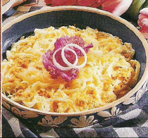
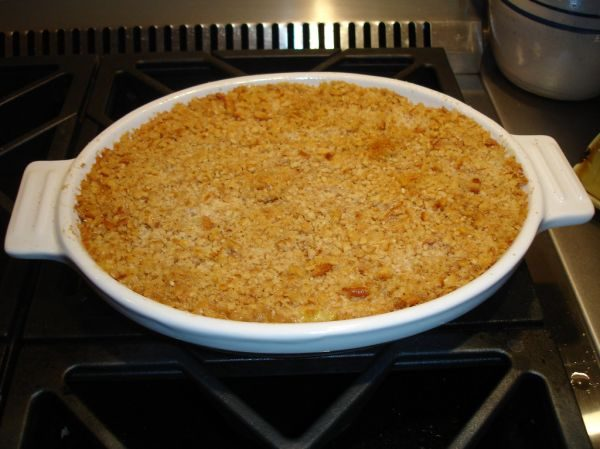

Vidalia Casserole
Makes 4-6 servings


Photo: shawnzrossi (CC BY 2.0)
A baked side dish of sauteed Vidalia onions folded with sour cream, layered with Parmesan cheese, and topped with buttery cracker crumbs. Makes 4-6 servings.
Directions
- In a skillet over medium heat saute onions in butter until tender. Remove from the heat; stir in sour cream. Spoon half into a greased 1 quart baking dish. Sprinkle with cheese. Top with remaining onion mixture and crackers. Bake, uncovered at 350 degrees for 20-25 minutes.
- In a skillet over medium heat, saute the onions in the butter until tender.
- Remove from the heat and stir in the sour cream.
- Spoon half of the onion mixture into a greased 1-quart baking dish. Sprinkle with the Parmesan cheese.
- Top with the remaining onion mixture and the crushed crackers.
- Bake, uncovered, at 350 degrees for 20 to 25 minutes.
Goes well with
https://baron-3dl.github.io/normans-kitchen/recipe/vidalia-casserole.html